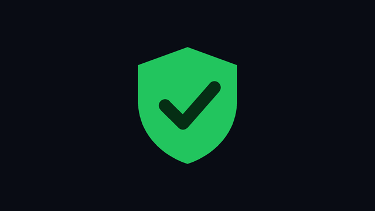

HiEarth в Telegram
Всё для оформления бота и канала: тексты для @BotFather и настроек канала, аватар, закреп и первые посты. Каждый блок копируется одной кнопкой; рядом показан лимит Telegram.
Аватар и обложкаОдна картинка для бота и канала — щит HiEarth на тёмном фоне. Telegram обрежет аватар в круг, щит остаётся целиком.

hiearth-cover-640x360.png · 640×360Файлы лежат в репозитории: docs/telegram-brand/. Обложка — для картинки описания бота (её спрашивает @BotFather) и для постов без своей картинки.
Сценки ежаКороткие гифки 640×360 по кругу, без звука. Бот сам прикладывает их к сообщениям: оплата, пополнение, напоминания, поддержка, новости. Меню бота остаётся текстом.
 wave.gif · первый /start, аккаунт создан, Telegram привязан
wave.gif · первый /start, аккаунт создан, Telegram привязан coin.gif · подписка оплачена или продлена
coin.gif · подписка оплачена или продлена piggy.gif · кошелёк пополнен
piggy.gif · кошелёк пополнен gift.gif · бонус за друга
gift.gif · бонус за друга alarm.gif · осталось 3 дня, последний день
alarm.gif · осталось 3 дня, последний день wallet.gif · на автопродление не хватает
wallet.gif · на автопродление не хватает sleep.gif · подписка закончилась
sleep.gif · подписка закончилась news.gif · новость в боте и канале
news.gif · новость в боте и канале support.gif · первый ответ поддержки
support.gif · первый ответ поддержкиРисует их скрипт docs/telegram-brand/scenes/render.py — тот же ёжик, что на сайте. wave.gif можно поставить картинкой описания бота: @BotFather → /mybots → бот → Edit Bot → Edit Description Picture. Её видят до нажатия «Запустить».
Бот @hiearthappВсё ниже — в чате с @BotFather. Меню команд и кнопку «Кабинет» сервер ставит сам, их трогать не нужно.
Сейчас «hiearth • Личный кабинет». Короткое «HiEarth» читается лучше в списке чатов и в пересланных приглашениях.
Это видит человек до «Запустить». После первого сохранения токена сервер больше не меняет описания — правьте их в @BotFather, «Проверить» в админке их не затрёт.
Включает «📤 Отправить другу»: человек выбирает чат, и туда уходит карточка-приглашение с его ссылкой. После включения нажмите «Проверить» в админке → «Telegram-бот».
/setuserpic→ hiearth-avatar-640.png.- Bot Settings → Configure Mini App → Enable → адрес
https://hiearth.ru/tg. В профиле бота появится кнопка «Открыть», заработают ссылкиt.me/hiearthapp?startapp. - Если @BotFather предлагает картинку описания — hiearth-cover-640x360.png.
/setjoingroups→ Disable: бот личный, в группы его добавлять незачем.
КаналНовости, советы и акции. Публикует бот из админки «Новости» — вручную писать тоже можно.
- Аватар — тот же, что у бота.
- Реакции: только выбранные — 👍 ❤️ 🔥 🎉.
- Комментарии пока выключены: без модерации туда приходит спам. Вопросы люди задают в боте — там поддержка.
- Подпись администраторов — выключена: посты от имени HiEarth.
- @hiearthapp — администратор с правами «Публикация», «Редактирование», «Удаление» (иначе правка и удаление новостей из админки не дойдут до канала).
Закреп и первые постыГотово для админки «Новости»: заголовок, текст (разметка Telegram), кнопка и куда отправить. Ничего не выдумано — только то, что есть в сервисе сейчас.
Как писать посты
| Что | Правило |
|---|---|
| Заголовок | До 60 символов — он же строка «📣 …» в Happ. Без точки, без капслока. |
| Текст | 2–4 коротких абзаца, одна мысль. С картинкой — до 1024 символов вместе с заголовком (ограничение Telegram). |
| Голос | На «вы», спокойно и по делу. Каждый пост отвечает: что нового, зачем это человеку, что нажать. |
| Эмодзи | Одно в начале абзаца или пункта, не в середине фраз. |
| Кнопка | Одна, глагол: «Открыть бота», «Как подключить». Ссылка — https://. |
| Картинка | 1280×720, тёмный фон, без мелкого текста. |
| Частота | 1–2 поста в неделю. Рассылку в бот — только для важного, остальное — в канал и ленту кабинета. |
| Нельзя | «VPN», названия протоколов, «обход блокировок», выдуманные цифры и отзывы, карты/СБП/ЮKassa. |